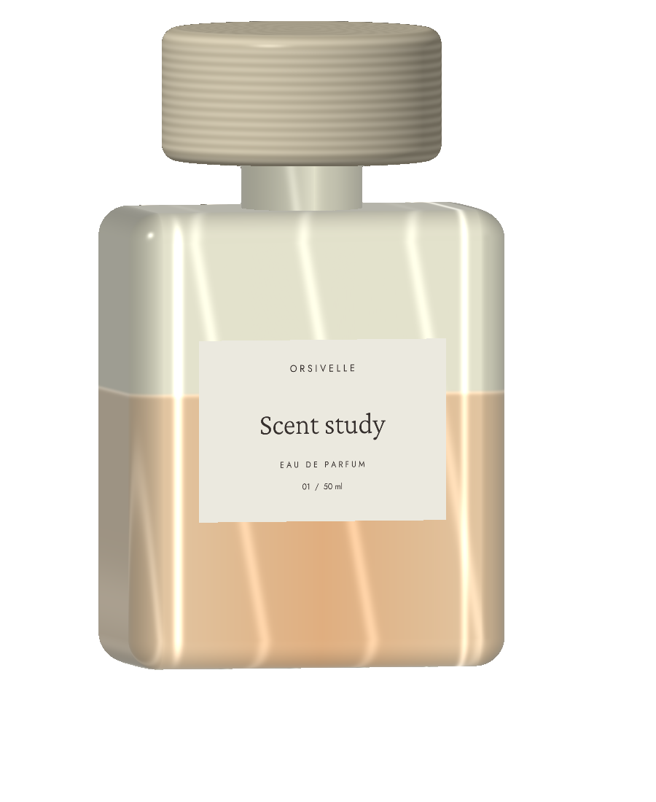

Skin
remembers.
Four scents. Four moods.
One very personal story.

What would you
like to be today?
From barely-there silk to warm wood.
Choose a scent and get to know its notes.
Dawn Silk
Light comes through the curtains. Cool pear meets soft iris and clean wood.
Not sure yet? Find your scent ↗Pear · bergamot
The first meeting.
Iris · white tea
What opens later.
Musk · pale wood
A calm memory.
A small set.
Many discoveries.
Choose one to three different scents. Each sample is 2 ml for a new acquaintance.
Local demonstration. This is not an order; no samples are sent.
Your samples
0 / 3Your first scent is still waiting.
The introduction can begin.
Local demonstration. Nothing was ordered, no data was sent and no payment is taken.
The set has no samples.
A scent opens slowly.
Meet it
Get to know one scent at a time. The first impression is only the beginning.
Let it stay
Write down how the impression changes as the day goes on. What you feel matters more than rules.
Come back
Choose the one you want to come back to. A different day can open another side of a scent.
About this scent study
Orsivelle and its four scents are invented. The note descriptions set a mood; they are not real formulas, ingredient lists or skin-tolerance claims. The search uses a simple, explained match of your choices. The set is not saved or sent.